SALE360
Este manual cobre todos os recursos e funcionalidades do Sale360 — do primeiro login à operação diária de vendas, controle de estoque, compras e indicadores de performance.
Visão Geral
O Sale360 é uma plataforma SaaS completa para PDV (Ponto de Venda) e gestão de loja. Ela integra vendas presenciais, catálogo online, controle de estoque com rastreamento por lote (PEPS), compras com precificação automática, fornecedores, clientes, cupons e indicadores de performance — tudo em um único sistema acessível pelo navegador.
Arquitetura do Sistema
O Sale360 é composto por:
- Painel Web (Next.js 16) — Interface de administração e PDV acessível pelo navegador
- API (Fastify + TypeScript) — Backend único com rotas organizadas por domínio
- Banco de Dados (PostgreSQL 17) — Persistência de todos os dados com Prisma ORM
- Catálogo Online (Next.js) — Vitrine pública do lojista com link para WhatsApp
- Nginx — Proxy reverso com SSL automático
Princípios de Design
- Mobile-First — Design pensado para celular, expandido para desktop
- Menos Cliques — Toda ação deve ser completada em até 2 toques
- Offline-First — O PDV nunca para, mesmo sem internet (modo offline com sincronização)
- Zero Surpresa — Preço fixo, sem comissão por transação, sem contrato de fidelidade
Acesso ao Sistema
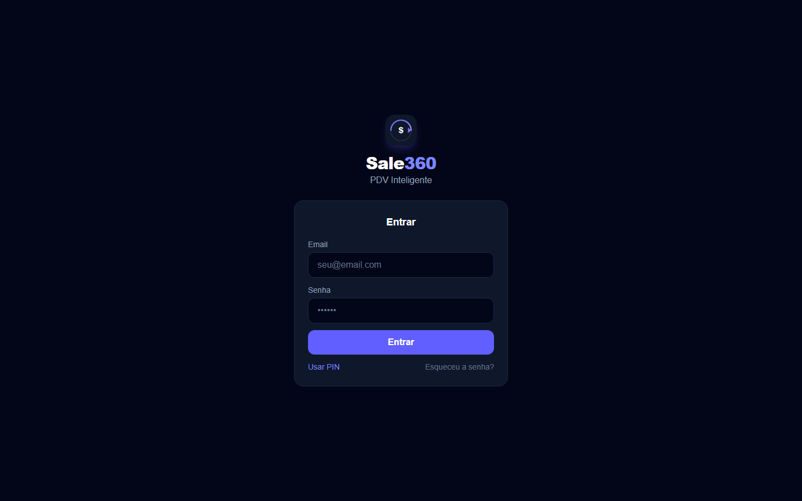
Login
Acesse o sistema pelo navegador na URL fornecida pelo administrador. A tela de login solicita:
- E-mail — cadastrado pelo administrador da plataforma
- Senha — definida no primeiro acesso
Após o login, se você tiver acesso a múltiplas lojas, o sistema exibe a tela de seleção de loja. Caso contrário, vai direto para o Dashboard da sua loja.
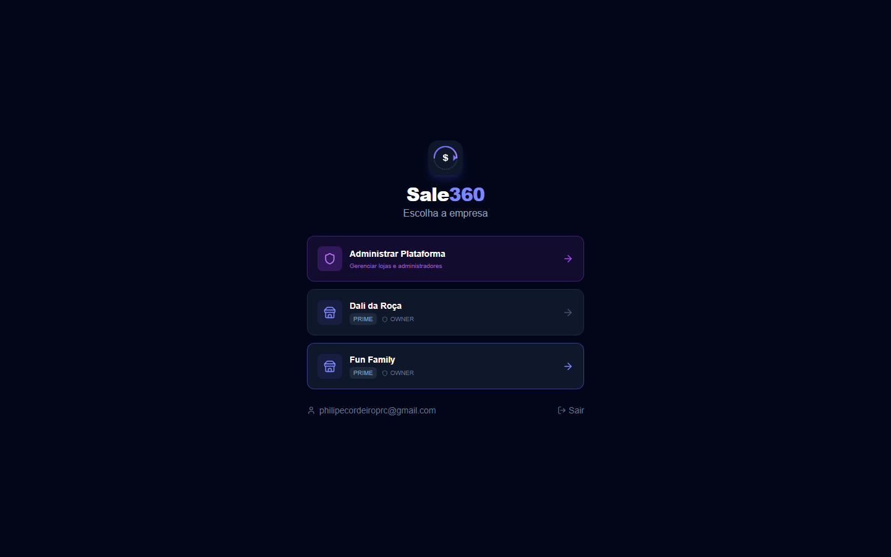
Seleção de Loja
Usuários com acesso a mais de uma loja podem alternar entre elas sem precisar fazer novo login. Cada loja tem seu próprio:
- Catálogo de produtos e variações
- Estoque por lote (PEPS)
- Histórico de vendas e compras
- Base de clientes e fornecedores
- Indicadores e configurações
Sessão e Segurança
- A sessão é mantida por 7 dias via JWT com refresh token
- Após expiração, o sistema redireciona para o login automaticamente
- Senhas são armazenadas com hash criptografado (bcrypt)
- Cada loja é isolada — um lojista não acessa dados de outro (multi-tenant com隔离 total)
Perfis de Usuário
O Sale360 implementa RBAC (Role-Based Access Control) com 4 perfis distintos:
| Perfil | Acesso | Responsabilidades |
|---|---|---|
| SUPER ADMIN | Todas as lojas | Gerencia a plataforma inteira: cria lojas, define planos, gerencia usuários globais e assinaturas |
| OWNER | Sua loja | Dono da loja com controle total: produtos, vendas, compras, estoque, clientes, fornecedores, cupons, finanças, indicadores e configurações |
| STAFF | Operação da loja | Operador de PDV: realiza vendas, consulta produtos e estoque. Não acessa configurações, finanças ou indicadores |
| READONLY | Leitura apenas | Visualiza produtos, vendas, estoque e indicadores. Não pode criar, editar ou excluir nada. Ideal para contadores e auditores |
Planos Disponíveis
O Sale360 oferece três planos com funcionalidades progressivas. O plano é definido pelo Super Admin e pode ser alterado a qualquer momento sem perda de dados. Todos os planos incluem 7 dias grátis, sem necessidade de cartão de crédito.
R$49,90/mês
Ideal para quem está começando a informatizar a loja.
- ✅ 1 usuário
- ✅ 1 dispositivo
- ✅ App PDV mobile
- ✅ Catálogo online
- ✅ Fiado e comandas
- ❌ Painel web admin
- ❌ Fornecedores
- ❌ Variações de produto
R$69,90/mês
Tudo do PRO, mais:
- ✅ Até 10 usuários
- ✅ 5 dispositivos
- ✅ Painel web admin
- ✅ Fornecedores
- ✅ Variações de produto
- ✅ Importação em lote
- ✅ Despesas recorrentes
R$99,90/mês
Tudo do GROW, mais:
- ✅ Usuários ilimitados
- ✅ Dispositivos ilimitados
- ✅ Suporte prioritário
- ✅ Suporte WhatsApp
- ✅ Suporte aos sábados
- ✅ Suporte por vídeo chamada
- ✅ API de integração
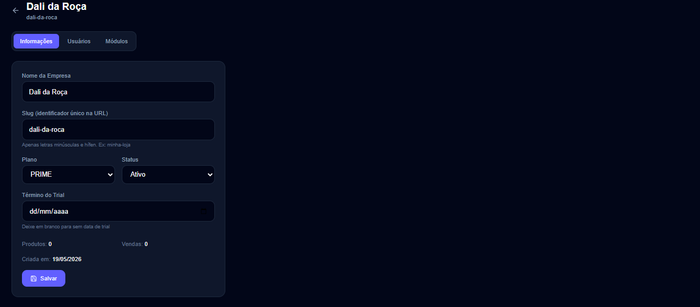
Guias Práticos
Esta seção contém tutoriais passo a passo das operações mais comuns do Sale360. Cada guia mostra o fluxo completo — da preparação à conclusão — cruzando diferentes módulos do sistema.
Como Cadastrar Produto e Dar Entrada no Estoque
Módulos envolvidos: Fornecedores → Categorias → Produtos → Compras → Estoque
Tempo estimado: 5-8 minutos (primeiro cadastro), 2 minutos (produtos seguintes do mesmo fornecedor)
1. Crie o Fornecedor
O fornecedor é obrigatório para registrar a origem da mercadoria.
2. Crie a Categoria (e o Template de Variação se necessário)
Antes de criar o produto, defina em qual categoria ele se encaixa. Se sua loja trabalha com variações (ex: tamanho, cor), configure o template agora.
- TAMANHO_LETRA — PP, P, M, G, GG, etc.
- TAMANHO_NUMERO — 34, 36, 38, 40, 42, etc.
- COR — Vermelho, Azul, Preto, etc.
- VOLUME — 200ml, 500ml, 1L, 2L, etc.
- PESO — 100g, 250g, 500g, 1kg, etc.
- PERSONALIZADO — Crie suas próprias dimensões
3. Crie o Produto
Agora que você tem fornecedor e categoria, crie o produto.
- Nome* — Nome do produto (ex: "Coca-Cola 2L")
- SKU — Código interno (se deixar em branco, é gerado automaticamente)
- Código de Barras — Escaneie ou digite o EAN-13
- Categoria — Selecione a categoria que você criou
- Preço de Venda — Preço para o consumidor (R$)
- Estoque Mínimo — Quantidade para alerta de reposição (ex: 10)
- Marque as opções desejadas para cada dimensão (ex: Tamanho: M, G, GG / Cor: Azul, Preto)
- Clique em "Gerar Combinações" — o sistema cria todas as combinações (ex: M+Azul, M+Preto, G+Azul, G+Preto, etc.)
- Ajuste o Estoque Inicial e Estoque Mínimo de cada variação
4. Efetue a Compra dos Produtos
É na compra que você registra quanto pagou e calcula o preço de venda correto.
| Campo | O que é | Exemplo |
|---|---|---|
| Custo Un. | Preço pago ao fornecedor por unidade | R$ 5,00 |
| Custo Oper. | Embalagem, frete, armazenamento por unidade | R$ 0,50 |
| Taxa % | Taxa da máquina de cartão (%) | 3% |
| Margem % | Porcentagem de lucro desejada | 50% |
| Pr. Venda | Preço final calculado (ou defina manualmente) | R$ 8,25 |
Fórmula: Preço Venda = (Custo + Custo Operacional) ÷ (1 - Taxa/100) × (1 + Margem/100)
Dica: Você pode digitar o Preço de Venda diretamente e o sistema recalcula a Margem automaticamente.
5. Receba a Compra (Entrada no Estoque)
A compra foi criada como Rascunho. Para o estoque ser atualizado, você precisa "Receber" a compra.
- Lotes de estoque são criados (método PEPS)
- A quantidade em estoque do produto é atualizada
- O preço de venda do produto é atualizado com base na precificação
6. Verifique o Estoque
Vá ao menu "Estoque" (ícone de camadas) e confira se o produto aparece com o saldo correto. Na aba "Lotes" você vê cada entrada separada com data, quantidade e custo.
Como Realizar uma Venda Completa no PDV
Módulos envolvidos: Vendas (PDV) → Clientes → Cupons → Estoque
Tempo estimado: 30-60 segundos (venda típica de balcão)
1. Abra a Tela de Vendas
2. Selecione o Cliente (ou Use Consumidor Final)
3. Adicione Produtos ao Carrinho
- Ajustar a quantidade
- Selecionar a variação (se o produto tiver variações)
- Para produtos com lotes e validade, o sistema pré-seleciona o lote mais antigo (PEPS)
4. Aplique Descontos e Cupons (Opcional)
5. Selecione a Forma de Pagamento
Cinco opções de pagamento:
| Forma | Quando usar |
|---|---|
| Dinheiro | Pagamento em espécie. Informe o valor recebido para calcular o troco. |
| Pix | Pagamento instantâneo via Pix. Opcionalmente gere QR code. |
| Débito | Cartão de débito. Registre os últimos 4 dígitos se desejar. |
| Crédito | Cartão de crédito. Pode parcelar conforme política da loja. |
| Fiado | Venda a prazo. Exige data de vencimento. O cliente deve ter cadastro. |
6. Finalize a Venda
7. Ações Pós-Venda
- Cancelar venda: Na lista de vendas, clique no pedido e use a opção "Cancelar". O estoque é revertido automaticamente para os lotes originais.
- Confirmar pagamento de fiado: Vendas fiado ficam com status "Pendente". Quando o cliente pagar, acesse a venda e clique em "Confirmar Pagamento".
- Enviar cobrança WhatsApp: Para vendas fiado, há a opção de enviar um lembrete de cobrança diretamente pelo WhatsApp do cliente.
- Visualizar detalhes: Clique em qualquer venda no histórico para ver itens, valores, descontos e dados do pagamento.
Como Gerenciar Vendas Fiado (a Prazo)
Módulos envolvidos: Clientes → Vendas → Financeiro
1. Cadastre o Cliente (se ainda não tiver)
2. Realize a Venda Fiado
3. Acompanhe e Receba o Pagamento
Como Configurar e Compartilhar seu Catálogo Online
Módulos envolvidos: Configurações → Produtos → Catálogo Online
1. Configure os Dados da Loja
- Nome da Loja — Aparece no topo do catálogo
- Telefone (WhatsApp) — Número que o cliente chama ao clicar em "Comprar"
- Endereço — Endereço físico da loja (opcional)
- Logo — Imagem da sua marca (aparece no topo do catálogo)
- Cores — Personalize as cores do catálogo com sua identidade visual
2. Prepare os Produtos
Certifique-se de que os produtos que você quer exibir estão:
- Com o campo Ativo = Sim (produtos inativos não aparecem)
- Com fotos cadastradas (produtos com imagem atraem mais cliques)
- Com preço de venda definido
3. Compartilhe o Link
https://sualoja.jvptecnologia.com.br/c/seu-slug. O link aparece nas configurações do catálogo.
- Instagram Bio (link direto)
- Stories do Instagram e Facebook
- WhatsApp Business (mensagem de saudação)
- Google Meu Negócio
- Grupos de WhatsApp e Telegram
4. Como o Cliente Compra
O fluxo para o cliente é simples:
- Acessa o link do catálogo
- Navega pelos produtos, busca por nome ou categoria
- Clica em "Comprar" no produto desejado
- O WhatsApp abre automaticamente com uma mensagem pronta: "Olá! Tenho interesse no produto [Nome do Produto] - [Link]"
- Você combina pagamento e entrega pelo WhatsApp
- Registre a venda normalmente no PDV do Sale360
Como Importar Dados em Massa (CSV)
Disponível nos planos: GROW e PRIME
Tempo estimado: 5-10 minutos
1. Baixe o Template CSV
- Produtos Simples — Produtos sem variação
- Produtos com Variações — Produtos com tamanho, cor, etc.
- Categorias — Categorias com ou sem template de variação
- Fornecedores — Cadastro de fornecedores
- Compras — Compras com precificação completa
2. Preencha o Arquivo
- Campos obrigatórios — Não deixe em branco
- Categorias — Se a categoria não existir, o sistema a cria automaticamente
- Variações — Use o formato: "Tamanho: P, M, G | Cor: Azul, Vermelho"
3. Importe o Arquivo
- Total de linhas encontradas
- Linhas com erro e a descrição do problema
- Linhas que serão importadas com sucesso
Primeira Configuração da Loja
Público: Dono da loja (OWNER) no primeiro acesso.
Tempo estimado: 15-20 minutos
1. Faça o Login e Troque a Senha
2. Configure os Dados da Loja
3. Configure as Taxas de Pagamento
4. Adicione Usuários da Equipe
Perfis: OWNER (dono, acesso total), STAFF (operador de caixa, só PDV), READONLY (leitura apenas, ideal para contador).
5. Cadastre seus Primeiros Dados
Siga a ordem lógica para evitar retrabalho:
- Fornecedores — Cadastre ao menos 1 fornecedor
- Categorias — Crie as categorias dos seus produtos
- Produtos — Cadastre os produtos (ou use a importação em massa)
- Compras — Registre a compra dos produtos e dê entrada no estoque
Consulte o guia Cadastrar Produto no Estoque para o passo a passo detalhado.
6. Faça sua Primeira Venda de Teste
7. Configure o Catálogo Online
Consulte o guia Configurar Catálogo Online para ativar sua vitrine digital.
✅ Senha alterada · ✅ Dados da loja · ✅ Taxas de pagamento · ✅ Usuários da equipe · ✅ Fornecedores · ✅ Categorias · ✅ Produtos com estoque · ✅ Catálogo online · ✅ Primeira venda teste
Dashboard
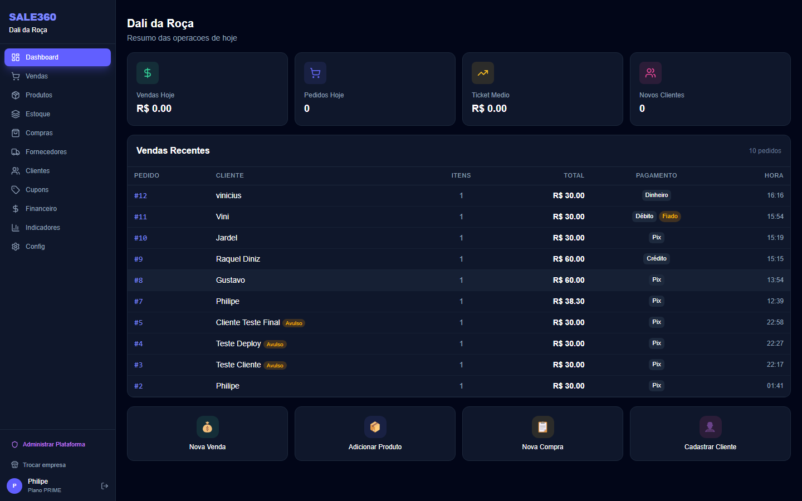
O Dashboard é a tela inicial do Sale360. Ele apresenta os principais indicadores de performance da sua loja em tempo real.
KPIs do Dashboard
- Vendas Hoje — Total faturado no dia atual com comparação percentual vs semana anterior
- Vendas no Mês — Faturamento acumulado do mês corrente
- Ticket Médio — Valor médio por venda no período selecionado
- Produtos com Estoque Baixo — Itens abaixo do estoque mínimo configurado
- Clientes Ativos — Compradores únicos nos últimos 30 dias
- Compras Pendentes — Compras em rascunho aguardando recebimento
Gráficos
- Vendas por Período — Gráfico de barras com faturamento diário/semanal/mensal
- Top 10 Produtos — Ranking de produtos mais vendidos por quantidade e receita
- Vendas por Categoria — Distribuição percentual do faturamento entre categorias
- Comparativo — Comparação lado a lado com período anterior (semana/mês/ano)
PDV (Ponto de Venda)
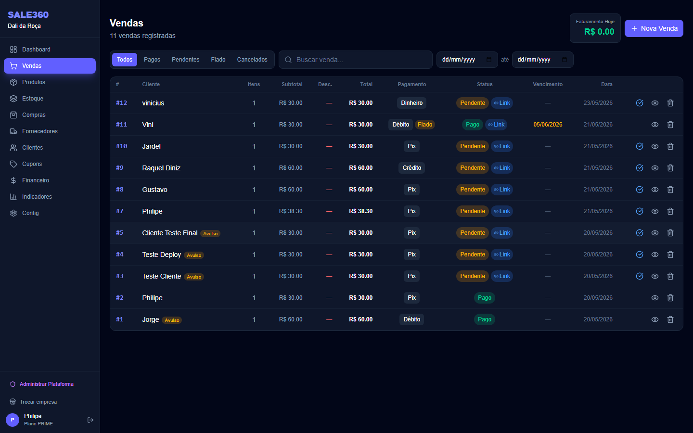
O módulo de PDV é o coração do Sale360. Ele permite realizar vendas de forma rápida e gerenciar todo o histórico.
Histórico de Vendas
A tela principal de Vendas exibe todas as transações com:
- Número do pedido — Identificador sequencial único
- Cliente — Nome do cliente (opcional na venda rápida)
- Valor total — Com desconto aplicado
- Data e hora — Momento exato da venda
- Status — Concluído, Cancelado, Pendente
- Forma de pagamento — Dinheiro, Cartão, Pix, Misto
Ao expandir uma venda, você visualiza todos os itens, quantidades, preços unitários e descontos aplicados.
Nova Venda — Modal Rápido
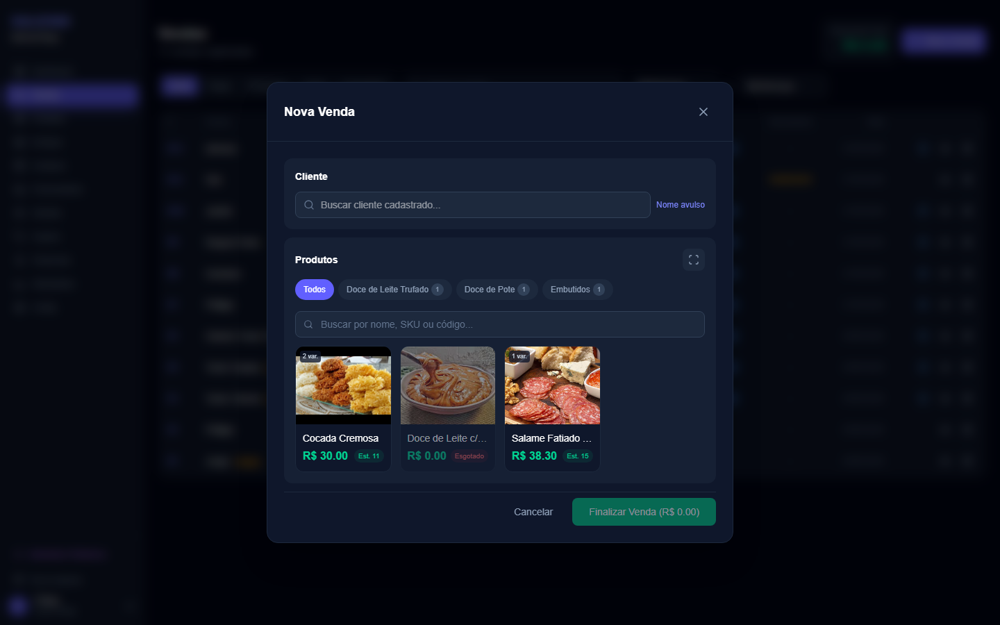
Para abrir uma nova venda, clique no botão "Nova Venda". O modal rápido permite:
- Buscar produto — Digite o nome ou código do produto. A busca é instantânea.
- Adicionar ao carrinho — Clique no produto, ajuste a quantidade se necessário
- Revisar carrinho — Itens, quantidades, subtotal e total são exibidos em tempo real
- Aplicar desconto — Desconto em reais (R$) ou porcentagem (%) sobre o total
- Selecionar pagamento — Escolha a forma de pagamento
- Finalizar — Um clique para concluir a venda
Tela de PDV Completa (Tela Cheia)
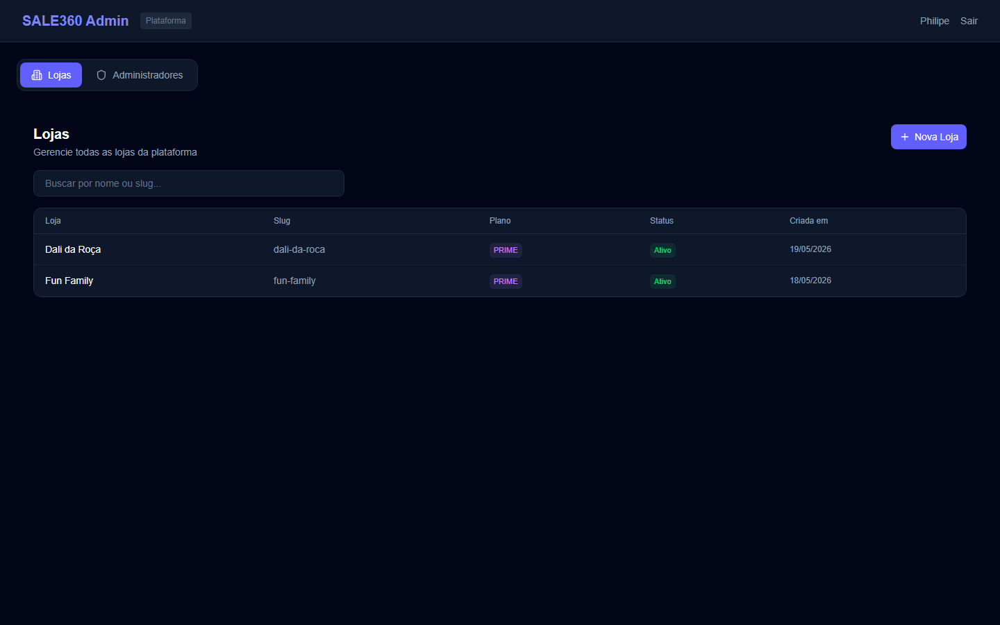
O modo PDV Tela Cheia foi projetado para uso em caixa com monitor ou tablet. Ele oferece:
- Busca em destaque — Campo de busca grande e central para agilidade
- Grade de produtos — Visualização em grid com fotos para seleção rápida
- Carrinho lateral — Sempre visível com subtotal, desconto e total
- Atalhos de teclado — Navegação e finalização sem mouse
- Modo contínuo — Ao finalizar uma venda, o PDV já está pronto para a próxima
Cancelamento de Venda
Uma venda pode ser cancelada a qualquer momento. Ao cancelar:
- O estoque é automaticamente revertido (itens voltam para os lotes originais)
- O status muda para CANCELADO
- O motivo do cancelamento é registrado para auditoria
- Vendas canceladas não aparecem nos indicadores de faturamento
Formas de Pagamento
O Sale360 suporta múltiplas formas de pagamento em uma mesma venda:
| Forma | Descrição |
|---|---|
| Dinheiro | Pagamento em espécie. Calcula troco automaticamente. |
| Cartão de Crédito | Registro da bandeira e últimos 4 dígitos (opcional). |
| Cartão de Débito | Similar ao crédito, sem parcelamento. |
| Pix | Pagamento instantâneo. Opcionalmente gera QR code. |
| Misto | Combinação de duas ou mais formas (ex: R$ 50 dinheiro + R$ 30 Pix). |
Produtos
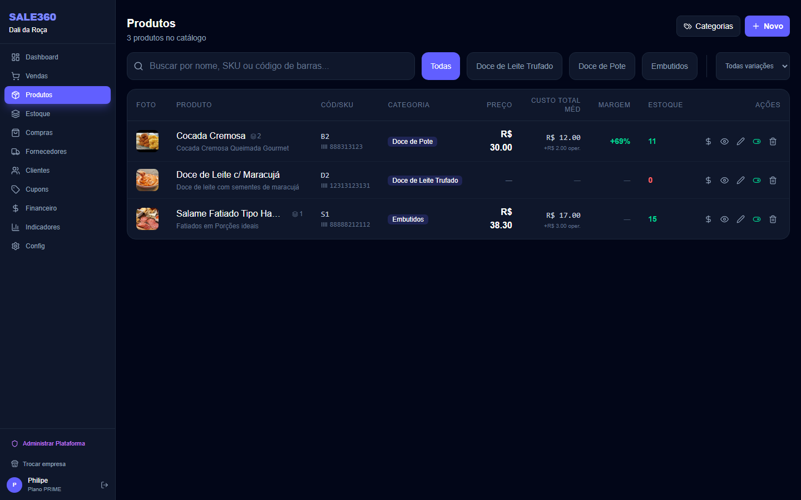
O módulo de Produtos centraliza o cadastro e gestão de todos os itens vendidos na loja.
Cadastro de Produto
Para cadastrar um novo produto, preencha:
| Campo | Descrição | Obrigatório |
|---|---|---|
| Nome | Nome do produto como aparece no PDV e catálogo | Sim |
| Código (SKU) | Código único de identificação. Gerado automaticamente se não informado | Não |
| Categoria | Categoria do produto (ex: Bebidas, Hortifruti, Laticínios) | Não |
| Preço de Venda | Preço base de venda ao consumidor | Sim |
| Custo | Custo de aquisição (atualizado automaticamente pela compra mais recente) | Não |
| Estoque Mínimo | Quantidade mínima para alerta de reposição | Não |
| Unidade | UN, KG, LT, CX, etc. | Sim |
| Imagem | Foto do produto para o PDV e catálogo online | Não |
| Ativo | Produto aparece no PDV e catálogo? (Sim/Não) | Sim |
Variações de Produto
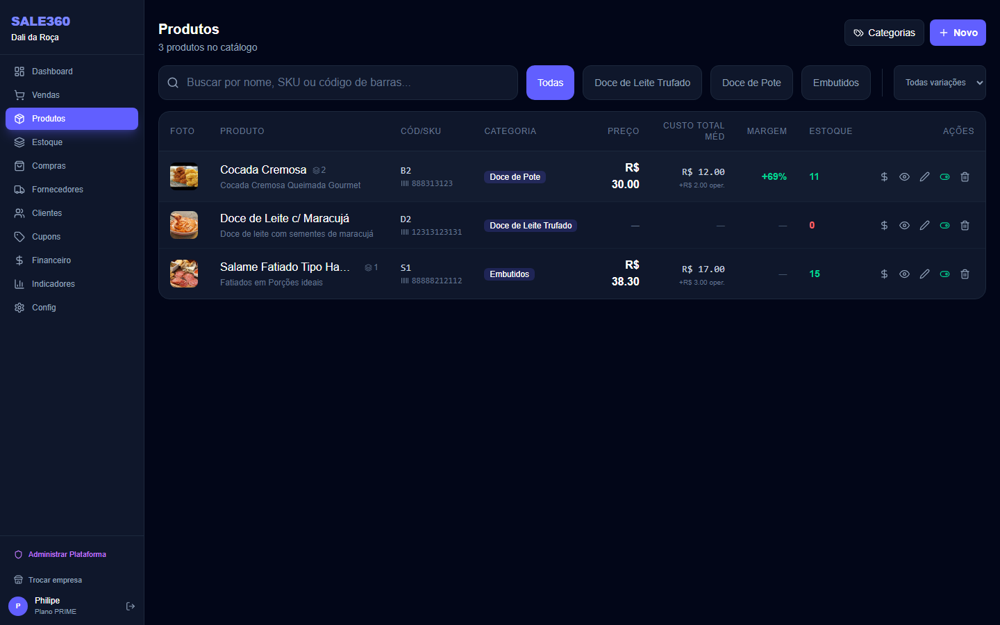
Produtos podem ter variações (ex: tamanho, cor, sabor). Cada variação possui:
- Nome — Identificador da variação (ex: "500ml", "1L", "2L")
- SKU próprio — Código único por variação
- Preço independente — Cada variação pode ter preço diferente
- Estoque separado — Controle de quantidade por variação
- Código de barras — EAN-13 para leitura por scanner
Importação em Lote
É possível importar produtos via arquivo CSV. O formato esperado inclui: nome, SKU, categoria, preço de venda, custo, estoque inicial e unidade. O sistema valida cada linha e reporta erros antes de inserir.
Estoque
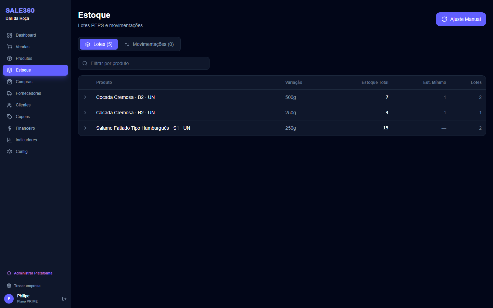
O módulo de Estoque oferece controle completo do inventário com rastreamento por lote usando o método PEPS (Primeiro que Entra, Primeiro que Sai).
Visão Geral
A tela principal do estoque exibe:
- Produto — Nome, SKU e categoria
- Saldo Atual — Quantidade disponível para venda
- Custo Médio — Custo médio ponderado de todas as compras
- Último Custo — Custo da compra mais recente
- Valor Total — Saldo × Custo médio (valor do estoque em R$)
- Alerta — Indicador visual quando o estoque está abaixo do mínimo
Lotes de Estoque (PEPS)

Cada entrada de estoque (via Compra) gera um lote com:
- Data de recebimento — Quando a mercadoria entrou no estoque
- Quantidade original — Quantidade recebida na compra
- Saldo disponível — O que resta deste lote (diminui com as vendas)
- Custo unitário — Preço pago nesta compra específica
Quando uma venda é realizada, o sistema automaticamente:
- Consome primeiro os itens do lote mais antigo (PEPS)
- Passa para o próximo lote se o primeiro não tiver saldo suficiente
- Registra o custo real da mercadoria vendida (CMV) baseado no lote
Entradas e Saídas
O estoque é movimentado de duas formas:
- Entrada: Ao Receber uma compra, os itens entram no estoque como novos lotes
- Saída: Ao Finalizar uma venda, os itens saem do estoque consumindo os lotes mais antigos
- Ajuste manual: Correções de inventário podem ser feitas diretamente na tela de estoque (com registro de motivo)
Compras
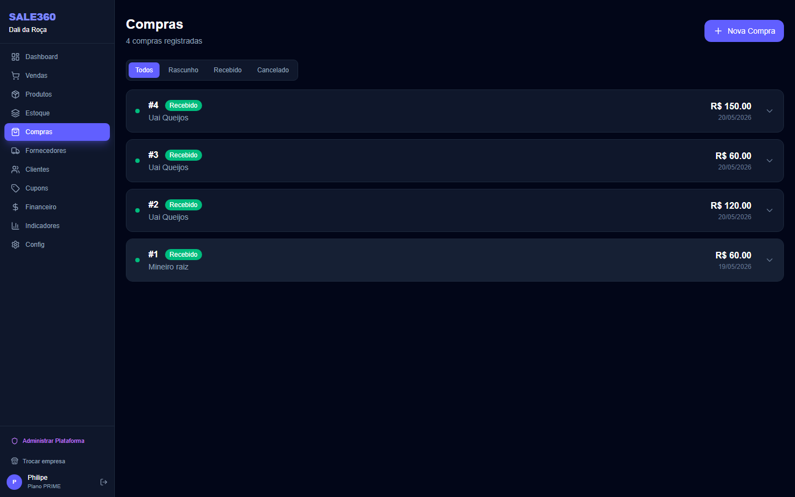
O módulo de Compras gerencia todo o processo de aquisição de mercadorias, desde o pedido até a entrada no estoque.
Fluxo da Compra
Uma compra sempre começa como Rascunho (DRAFT). A partir daí, pode ser Recebida (entra no estoque) ou Cancelada (não afeta estoque).
Criar / Editar Compra
Para criar uma compra:
- Selecione o Fornecedor
- Adicione os Itens (produtos, quantidades e custos unitários)
- Opcional: Vincule um Cliente (para encomendas sob demanda)
- Adicione Observações se necessário
- Salve como Rascunho
Calculadora de Precificação (5 Campos)
O Sale360 oferece uma calculadora de preço de venda com 5 variáveis para cada item da compra:
| Campo | Descrição |
|---|---|
| Custo Unitário | Preço pago ao fornecedor por unidade |
| Custo Operacional | Embalagem, frete, armazenamento (R$ por unidade) |
| Taxa Cartão (%) | Percentual da taxa da máquina de cartão |
| Margem (%) | Margem de lucro desejada sobre o custo total |
| Preço de Venda | Calculado automaticamente ou definido manualmente |
Recebimento de Compra
Ao receber uma compra:
- O status muda de Rascunho → Recebido
- Novos lotes de estoque são criados para cada item
- A data de recebimento é registrada (usada na ordenação PEPS)
- Datas de validade podem ser informadas por lote (para produtos perecíveis)
- O preço de venda do produto pode ser atualizado automaticamente com base na precificação
Importação de Compras via CSV
Compras podem ser importadas em lote via arquivo CSV. O template inclui: fornecedor, produto, quantidade, custo unitário, custo operacional, taxa cartão, margem e preço de venda sugerido.
Fornecedores
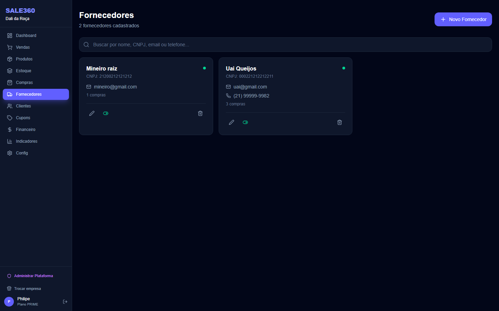
O módulo de Fornecedores centraliza os dados de todos os parceiros de fornecimento da loja.
Cadastro de Fornecedor
| Campo | Descrição | Obrigatório |
|---|---|---|
| Nome | Razão social ou nome fantasia | Sim |
| CNPJ/CPF | Documento fiscal do fornecedor | Não |
| Telefone | Contato principal para pedidos | Não |
| E-mail de contato e envio de pedidos | Não | |
| Endereço | Logradouro completo | Não |
| Observações | Informações internas sobre prazos, condições, etc. | Não |
| Ativo | Fornecedor aparece na lista de seleção? (Sim/Não) | Sim |
Ao criar uma compra, apenas fornecedores ativos aparecem na lista de seleção. Fornecedores inativos são ocultados mas mantêm o histórico de compras anteriores.
Clientes
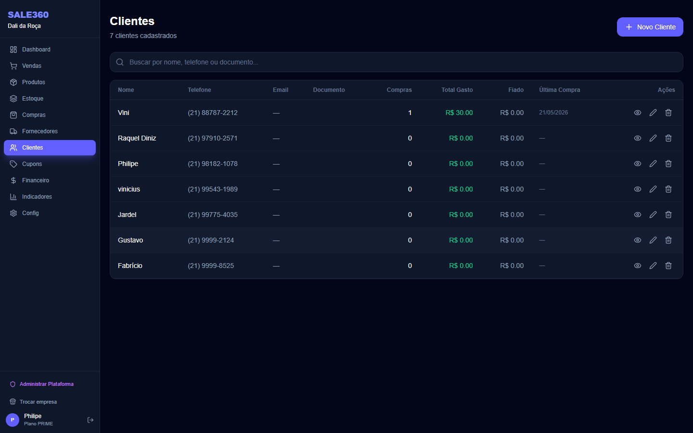
O módulo de Clientes gerencia a base de compradores da loja, com histórico completo de compras.
Cadastro de Cliente
| Campo | Descrição | Obrigatório |
|---|---|---|
| Nome | Nome completo do cliente | Sim |
| Telefone | WhatsApp ou celular (usado no link do catálogo) | Não |
| E-mail para comunicações e marketing | Não | |
| CPF | Documento para identificação fiscal | Não |
| Endereço | Endereço de entrega | Não |
| Observações | Preferências, restrições, dados relevantes | Não |
Histórico do Cliente
Ao acessar os detalhes de um cliente, você visualiza:
- Total gasto — Somatório de todas as compras
- Número de compras — Quantidade de transações
- Ticket médio — Valor médio por compra
- Última compra — Data da transação mais recente
- Lista de compras — Histórico completo com itens, valores e datas
- Produtos favoritos — Itens mais comprados pelo cliente
Cupons de Desconto
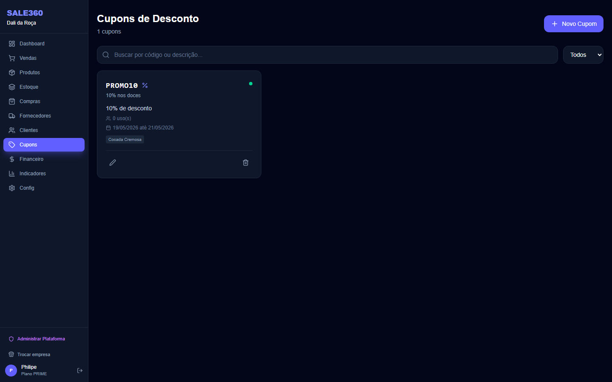
O módulo de Cupons permite criar códigos promocionais para aplicar descontos nas vendas.
Criação de Cupom
| Campo | Descrição | Obrigatório |
|---|---|---|
| Código | Código do cupom (ex: "NATAL25", "BOASVINDAS10") | Sim |
| Tipo | Percentual (%) ou Valor fixo (R$) | Sim |
| Valor | Valor do desconto (ex: 10 para 10% ou R$ 10,00) | Sim |
| Valor Mínimo | Valor mínimo da compra para o cupom ser válido | Não |
| Data Início | Quando o cupom começa a valer | Não |
| Data Fim | Quando o cupom expira | Não |
| Limite de Uso | Quantas vezes o cupom pode ser usado (total) | Não |
| Ativo | Cupom está disponível para uso? (Sim/Não) | Sim |
Aplicação na Venda
No PDV, o operador pode aplicar um cupom digitando o código. O sistema:
- Valida se o cupom existe, está ativo e dentro do período
- Verifica se a compra atinge o valor mínimo configurado
- Aplica o desconto sobre o total
- Registra o uso do cupom no histórico
Financeiro
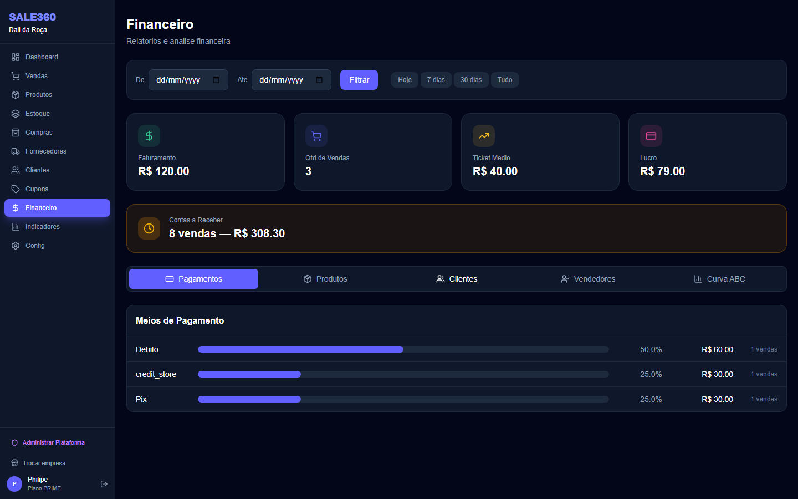
O módulo Financeiro oferece uma visão consolidada das finanças da loja.
Fluxo de Caixa
- Entradas — Vendas concluídas, agrupadas por forma de pagamento
- Saídas — Compras recebidas (custo das mercadorias)
- Saldo — Entradas menos saídas no período
Resumo do Período
Selecione o período (hoje, semana, mês ou personalizado) e visualize:
- Faturamento bruto (total de vendas)
- Descontos concedidos (cupons + descontos manuais)
- Faturamento líquido
- Custo das mercadorias vendidas (CMV)
- Margem bruta (R$ e %)
- Distribuição por forma de pagamento
Indicadores
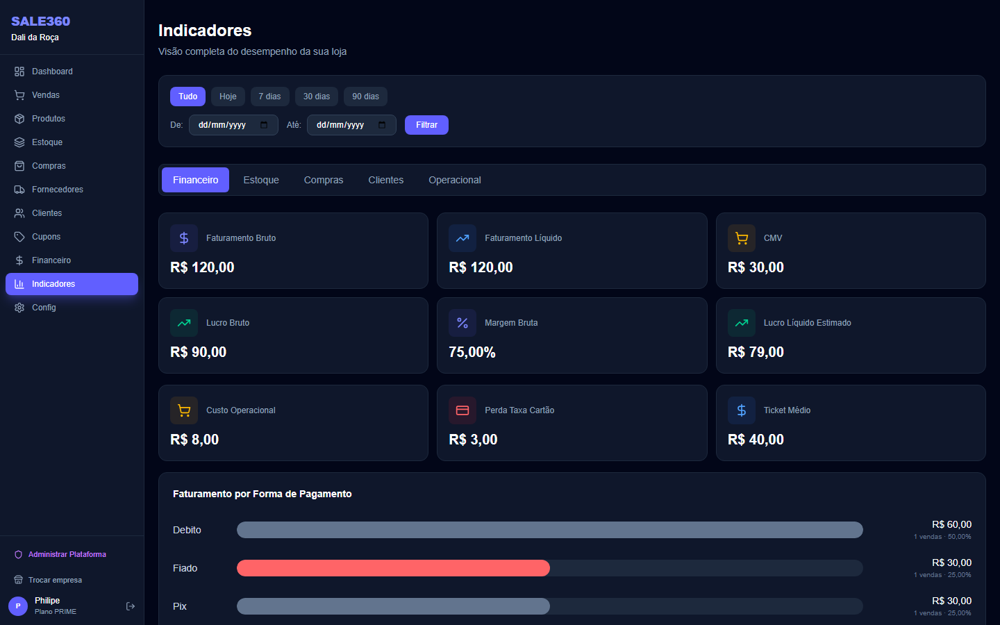
O módulo de Indicadores oferece uma análise detalhada da performance da loja.
Indicadores de Vendas
- Ticket Médio — Valor médio por venda no período
- Itens por Venda — Média de itens em cada transação
- Vendas por Hora — Horários de pico de movimento
- Vendas por Dia da Semana — Dias mais fortes e mais fracos
- Taxa de Conversão — Vendas concluídas vs canceladas
Indicadores de Produtos
- Top 10 Produtos — Mais vendidos por quantidade e receita
- Giro de Estoque — Quantas vezes o estoque girou no período
- Margem por Produto — Lucro bruto unitário e total
- Produtos Parados — Itens sem venda nos últimos 30/60/90 dias
- Produtos com Estoque Baixo — Abaixo do mínimo configurado
Indicadores de Compras
- Total Gasto — Soma de todas as compras recebidas no período
- Prazo Médio — Tempo entre criação do rascunho e recebimento
- Compras Pendentes — Em rascunho aguardando finalização
- Compras por Fornecedor — Distribuição de gastos entre fornecedores
Catálogo Online
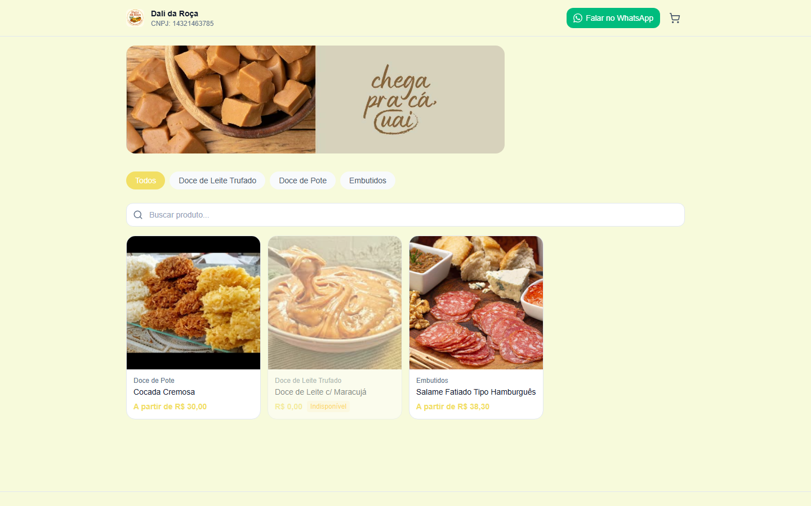
O Catálogo Online é a vitrine pública da sua loja. Clientes podem navegar pelos produtos sem precisar instalar nada.
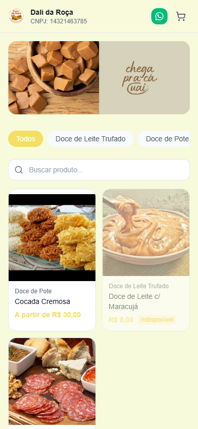
Funcionalidades do Catálogo
- URL personalizada — Cada loja tem seu próprio link (ex: /catalogo/nome-da-loja)
- Grade de produtos — Fotos, nomes e preços em destaque
- Busca — Campo de busca por nome ou categoria
- Link WhatsApp — Botão "Comprar" que abre conversa direta no WhatsApp com o produto selecionado
- Responsivo — Design adaptado para celular, tablet e desktop
- Produtos ativos — Apenas produtos marcados como "Ativo" aparecem no catálogo
Integração WhatsApp
Quando o cliente clica em "Comprar" no catálogo:
- Abre o WhatsApp com o número da loja (configurado em Configurações)
- A mensagem já vem preenchida com o nome do produto e link
- O lojista responde, combina o pagamento e registra a venda no PDV
Configurações da Loja
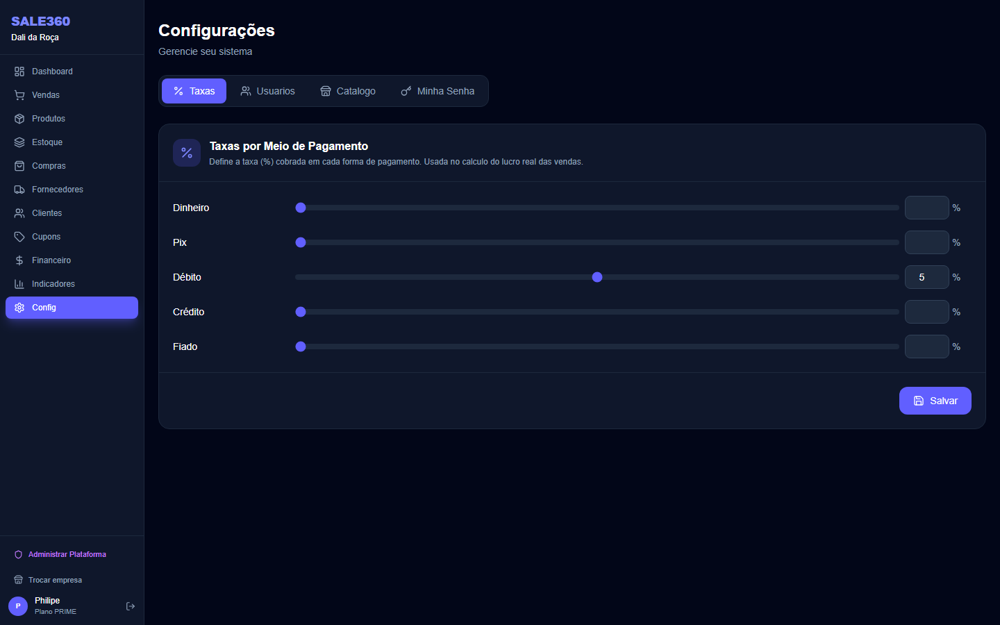
O módulo de Configurações centraliza as preferências da loja e os dados exibidos no catálogo.
Dados da Loja
| Configuração | Descrição |
|---|---|
| Nome da Loja | Nome exibido no painel e no catálogo online |
| Slug | Identificador único na URL do catálogo (definido na criação, não editável) |
| Telefone | Número do WhatsApp para o botão "Comprar" do catálogo |
| Endereço | Endereço físico da loja |
| Logo | Imagem da marca exibida no painel e catálogo |
Preferências
- Moeda — Símbolo da moeda (padrão: R$)
- Fuso horário — Timezone para registro de vendas e relatórios
- Estoque mínimo padrão — Valor usado como alerta para novos produtos
- Desconto máximo — Limite de desconto que operadores podem aplicar sem aprovação
Área do Super Admin
O Super Admin tem visão global de todas as lojas cadastradas na plataforma. Acesso exclusivo pelo painel administrativo.
Lojistas (Tenants)
O painel de lojistas permite:
- Criar nova loja — Nome, slug, plano, e-mail do proprietário
- Editar dados — Alterar informações da loja a qualquer momento
- Alterar plano — Upgrade ou downgrade instantâneo. Features são liberadas ou bloqueadas conforme o plano
- Ativar/Desativar — Suspender acesso de uma loja sem perder dados
- Visualizar métricas — Total de usuários, produtos, vendas e status da loja
Usuários Globais
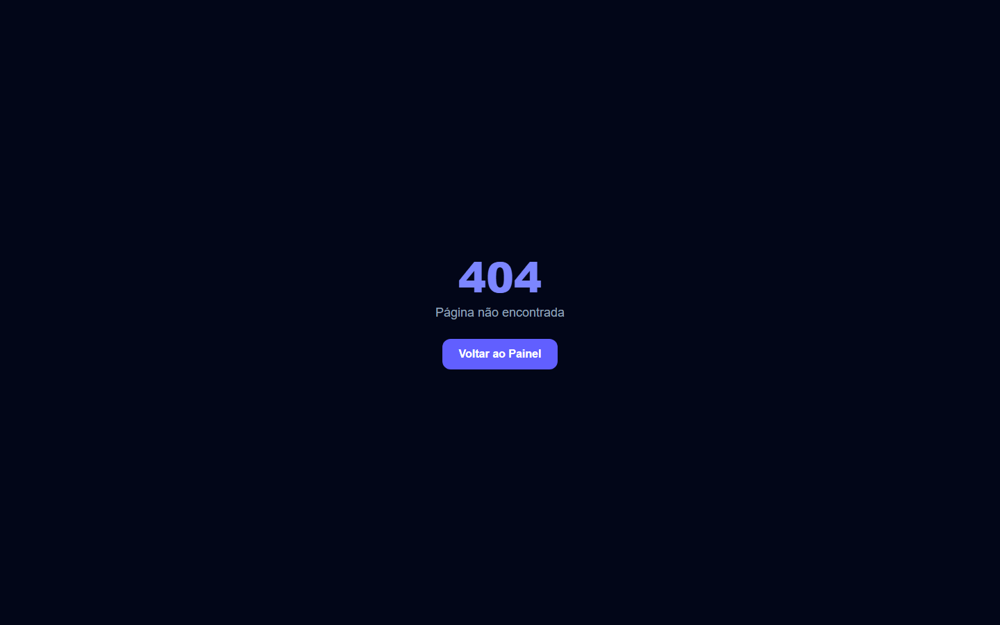
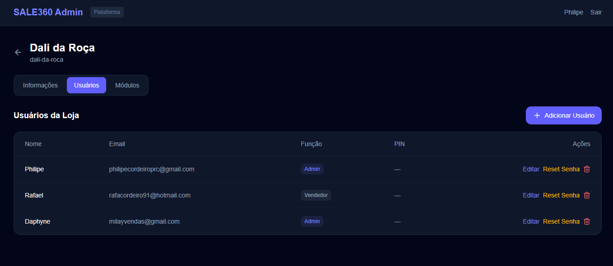
O Super Admin pode gerenciar todos os usuários da plataforma:
- Listar todos os usuários com filtro por loja, perfil e status
- Criar novos usuários e vinculá-los a lojas específicas
- Ativar ou desativar usuários
- Alterar perfil de acesso (OWNER, STAFF, READONLY)
- Redefinir senha de qualquer usuário
- Ver histórico de acessos
Assinaturas e Planos

O painel de assinaturas permite gerenciar os planos contratados:
- Visualizar assinatura atual — Plano, status, data de início e expiração
- Alterar plano — Upgrade ou downgrade com efeito imediato
- Renovar assinatura — Extensão do período contratado
- Histórico de planos — Todas as alterações de plano da loja
- Status da assinatura — Ativa, Suspensa, Expirada, Trial
App Mobile (PWA)
O Sale360 é uma PWA (Progressive Web App), o que significa que pode ser instalado como um aplicativo nativo no celular sem precisar baixar da loja de apps.
Como Instalar
No Safari: ícone Compartilhar → "Adicionar à Tela de Início".
Vantagens do PWA
- Não ocupa espaço de armazenamento (menos de 1 MB)
- Atualiza automaticamente — sempre a versão mais recente
- Funciona offline — o PDV continua operando mesmo sem internet (sincroniza depois)
- Ícone personalizado na tela inicial
- Notificações push (em breve)
Suporte
O Suporte do Sale360 está disponível para todos os planos:
| Canal | Planos | Tempo de Resposta |
|---|---|---|
| Todos | Até 24h úteis | |
| Pro e Prime | Até 4h úteis | |
| Telefone | Prime | 24/7 com SLA de 1h |
Contato: suporte@jvptecnologia.com.br
Site: www.jvptecnologia.com.br
Sale360 — PDV Inteligente
© 2026 JVP Tecnologia. Todos os direitos reservados.
Manual versão 1.0 · Maio 2026